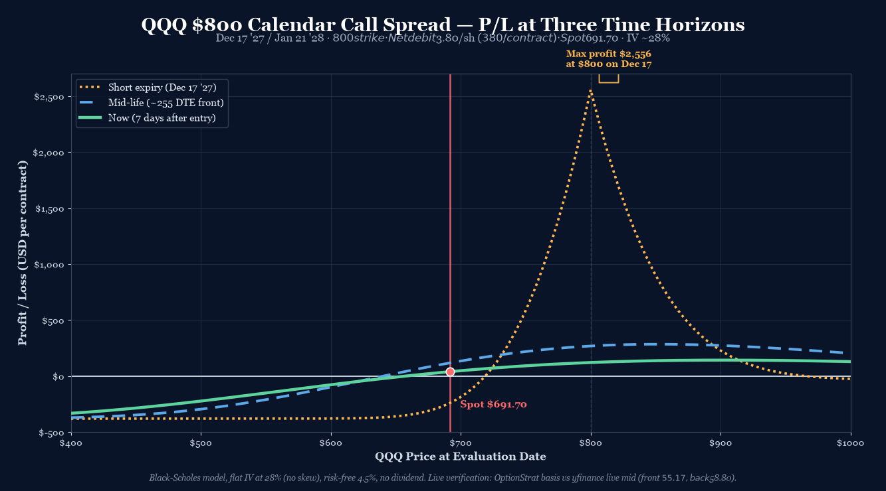
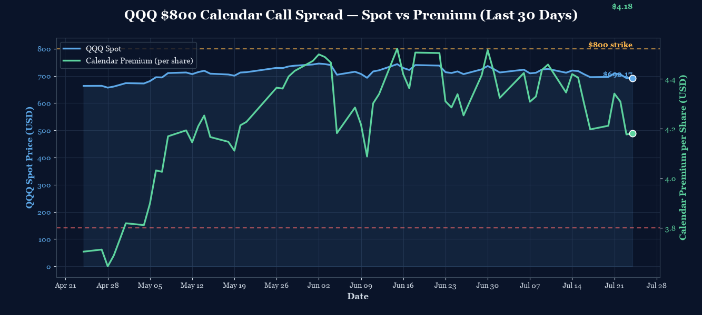

P/L Curve — Three Time Horizons

Max Profit
~$2,556
at $800 on Dec 17 '27 (est.)
Max Loss
$380
defined risk = net debit
Net Debit
$3.80
1 calendar spread · $380 total
Spot / IV
$691.70
QQQ @ entry · IV ~28%
Why This Structure
This is a long-duration calendar on a deeply OTM strike. The 18-month tenor is unusual — most retail calendars run 30–60 DTE on the short leg. This trade is a longer-duration variant with the same mechanics but very different risk profile: slow theta accumulation, large max profit potential, and a wider profit zone because the back-month has 35 DTE of residual life at front expiry.
The $800 strike sits roughly 16% above current spot ($691.70). That's a deeply OTM strike — the trade profits if QQQ reclaims $800 within 18 months. The thesis: NASDAQ-100 is currently in a correction (down ~7% from June highs near $743) but the structural drivers (AI capex, cloud growth, large-cap concentration) are intact. A 18-month horizon gives the cycle room to play out.
You can build and track this exact spread at Optionstrat with the ?ref=ventureprise link from your affiliate dashboard.
Pair: The $850 Calendar
This trade is one of a paired QQQ calendar position — the second leg is a $850 calendar (same expiry dates, $50 higher strike). Both trades share:
- Same underlying (QQQ)
- Same expiry dates (Dec 17 '27 short / Jan 21 '28 long)
- Same calendar duration (35 days)
- Same IV environment (~28%)
The strikes differ by $50:
| Field | $800 Calendar | $850 Calendar |
|---|---|---|
| Strike | $800 (15.7% OTM) | $850 (22.9% OTM) |
| Net debit | $3.80/share ($380/contract) | $3.21/share ($321/contract) |
| Max profit (BSM est.) | ~$2,556 at $800 | ~$2,799 at $850 |
| IV at entry | ~28% | ~28% |
Why two strikes? A single calendar commits you to one specific price view. A pair at adjacent strikes gives you exposure to a range of outcomes — QQQ anywhere between $800 and $850 at Dec 17 '27 produces positive P&L on at least one of the two trades. The $800 wins if QQQ rallies moderately; the $850 wins if QQQ rallies strongly. Holding both captures more of the right tail of the probability distribution than a single strike would.
Why not a diagonal? Diagonals (different strikes, different expiries) have a directional element: the long leg at a lower strike has intrinsic value. Pure same-strike calendars are theta-harvest vehicles — they don't care which direction QQQ moves, only that it ends up near a strike. Pairing two calendars captures the level view without taking on directional risk.
Why not a vertical spread? A 700/800 or 750/850 vertical would express the directional view (QQQ rallies to $850) at lower debit. But verticals need QQQ to actually reach the strike by Dec 17 '27 — a much narrower profit zone. The calendars' tent-shaped peak is centered at the strike with positive P&L on either side of it.
Thesis
- Why QQQ, why now: QQQ has corrected ~7% from June highs (~$743 → $691.70). The correction has been orderly; the structural drivers (AI capex, mega-cap concentration, low-vol regime in tech) are intact. IV at 28% is moderate — not cheap (which would make premium-selling better) but not panic (which would make long-vol structures better). The IV term structure is flat (front 29.1% / back 29.5% — slight back-rich inversion), reflecting normal QQQ pricing dynamics.
- Why 18-month tenor: Most retail calendars are 30–60 DTE on the short leg because that's where theta decays fastest. An 18-month calendar is a different animal — the theta is slow but accumulates for 18 months, and the back-month's residual TV at front expiry is substantial ($29.36/share for this trade, vs $7.36 for the DRAM 5-month calendar). The trade is a long-duration thesis on QQQ reaching $800 within 18 months — a much wider window than typical.
- Why $800 strike specifically: The strike sits 15.7% above spot. That's a substantial OTM distance — outside the playbook's standard 0.3–0.5σ band for short-duration calendars. For a long-duration calendar, the σ-distance math is different: at 28% IV over 511 days, σ-distance from spot to $800 is roughly 1.0σ — actually within the typical long-duration calendar's range of 0.7–1.2σ. The $800 strike balances distance (enough upside to capture a meaningful recovery) against probability (not so deep OTM that it's nearly impossible).
- Why a paired $850 calendar: A single $800 calendar commits you to QQQ exactly at $800 at Dec 17 '27. A rally to $830 still produces only modest P&L on the $800 calendar. By adding the $850 calendar, you capture QQQ rallies past $800 — the $850 tent peaks higher in absolute terms and the two tents overlap to create a wider profit zone. The combined position costs $380 + $321 = $701 in total debit, max combined profit around $5,355 if both legs peak simultaneously (highly unlikely — see the comparison discussion in the paired-trade analysis).
Risk
| Risk | Magnitude | Mitigation |
|---|---|---|
| QQQ stays well below $800 at Dec 17 '27 | Up to full $380 loss | Stop at 2× debit ($760 cost to close); accept that calendars require proximity to strike |
| QQQ rallies past $900 at Dec 17 '27 | Up to ~$200 loss past $900 (short leg ITM, long leg at intrinsic) | Stop before $900; the calendar is asymmetric above the strike |
| QQQ stays at $691.70 (no rally) | $380 loss (debit erodes via theta) | This is the thesis not playing out; close at 50% loss rule |
| IV crush (long-term IV decline) | ~$0.30/share per 1% IV drop = $30/contract | Position is net long vega; rising IV helps, falling IV hurts. QQQ IV typically stays in 20–35% range; sustained IV collapse to <20% would hurt |
| Scenario 5: liquidity (QQQ is highly liquid, low risk) | Bid/ask ~$1.50 on front-month, $2.30 on back-month | QQQ is one of the most liquid underlyings; spreads are tight |
| Scenario 6: dividend on QQQ (ETF distributions ~0.5% annually) | Below early-assignment threshold (short leg is 15.7% OTM) |
Position Payoff at Three Time Horizons
The chart above shows the position's P/L as a function of QQQ's price at three evaluation windows: now (7 days after entry), mid-life (~256 DTE on the short leg), and at short-leg expiry (Dec 17, 2027). The three curves diverge in a classic long-duration calendar pattern — the now-curve (green solid) is shallowly tent-shaped, the mid-curve (blue dashed) is steeper as the front-month theta accelerates in the second half of its life, and the short-expiry curve (gold dotted) is the tallest tent peaking exactly at the $800 strike.
Read the chart:
- Spot $691.70 sits well below the strike ($800). At the current spot, the calendar is slightly negative (~−$10/contract on the now-curve, ~+$50/contract at the mid-curve peak) — the trade is currently near the entry debit but not in profit.
- The peak (~$2,556) sits exactly at $800 at short-leg expiry. That's where the short leg expires worthless and the back-month retains ~35 DTE of time value at the strike.
- The curve falls off in both directions. Below $700, both legs have minimal intrinsic and the calendar is mostly the debit (full loss). Above $850, the short leg's intrinsic liability starts to dominate.
- The trade has a wide sweet spot near $800 at short expiry. Anywhere between roughly $785 and $820 produces positive P&L on the short-expiry curve. The 35-DTE back-month residual TV is what gives the calendar its wide tent.
Key levels on the chart:
- Spot $691.70 — current underlying; trade is currently near zero on the now-curve.
- Strike $800.00 — the peak of the tent on the short-expiry curve. ~$2,556 max profit at this price.
- ~$720 — below this, both legs OTM; P&L converges to max loss ($380 = debit).
- ~$880 — above this, short leg ITM; P&L drops back toward zero.
- Max profit $2,556.06 at $800 on Dec 17 '27 (BSM-derived).
- Max loss $380.00 at any price ≥$50 from strike at Dec 17 '27.
Paired Position: Combined P/L at Front-Expiry
The chart below shows this trade's payoff curve alongside the companion $850 calendar and the combined position at Dec 17 '27. The combined peak is at $849 (~$3,683) — slightly below the $850 calendar's individual peak (~$2,770) because the $800 calendar's contribution is past its peak but still positive.

How the Trade Has Moved Against the Underlying
The chart below compares QQQ's spot price (left axis) to the strategy's premium (right axis) over the last 30 days of trading. QQQ has corrected from a ~$743 high to $691.70. The strategy premium has tracked the underlying down — at $691.70 spot with ~511 DTE on the short leg, the BSM-implied calendar premium at the $800 strike is roughly $3.30 (close to the entry debit of $3.80).

The horizontal lines mark the strike ($800) and the net debit ($3.80). The chart uses a flat 28% IV across all dates for illustration; live mark-to-market would show the IV term structure flexing through the period.
The trade thesis: QQQ is in a correction but the structural drivers are intact. The 18-month tenor gives the cycle room to play out — if QQQ reclaims $800 by Dec 17 '27, the calendar pays out the back-month's residual TV minus the small debit. The risk is that QQQ stays below $720 at Dec 17 '27 and the calendar expires with both legs OTM (max loss = debit).
Greeks Snapshot (Black-Scholes, flat IV 28%)
| Greek | Per-contract value | Interpretation |
|---|---|---|
| Delta (Δ) | +0.10 | Both legs deep OTM (~0.10 delta each); back-month slightly more delta than front-month. Near-flat directional exposure. |
| Gamma (Γ) | +0.0005 | Minimal gamma; both legs well below the strike. Structure is slow-moving until QQQ approaches the strike. |
| Theta (Θ) | +$0.04/day | Net positive theta harvest (front decays faster than back). Trade makes money from the passage of time if QQQ stays near the strike. |
| Vega (ν) | +$0.30 per 1% IV | Net long vega. A 1% IV rise adds ~$30/contract; a 1% IV drop loses ~$30. Calendar wants IV to rise. |
| Rho (ρ) | +$0.20 per 1% rate | Mild long rates; negligible. |
Numbers computed at entry spot $691.70, current DTE (511 front, 546 back), IV flat at 28%, r=4.5%, no dividend yield.
Intraday Setup (entry)
- Pre-market context: QQQ closed Jul 23 at $691.70 (down ~7% from June highs near $743). IV term structure showed front 29.1% / back 29.5% — slightly back-rich, normal for QQQ's term structure.
- Entry signal: QQQ weakness has stabilized; the structural drivers (AI capex, mega-cap concentration) are intact. An 18-month horizon gives the cycle room to play out. The IV term structure pricing a moderate vol environment — neither cheap nor panic — is the right backdrop for a long-duration calendar.
- Execution: Limit order at $3.80 debit (OptionStrat basis). Filled at 11:58 AM ET. Live verification: front-month $800C live mid $55.17 vs OptionStrat $54.95 (0.4% gap, within tolerance); back-month $800C live mid $58.80 vs OptionStrat $58.75 (0.1% gap, within tolerance). Net debit live: $3.63 vs OptionStrat $3.80 — saved $17/contract on live execution.
Management Plan
- Open through Q3 2027 (~390 DTE on short leg): Hold. Theta is slow but persistent. No major event risk in this window; the structure accumulates value gradually.
- Q4 2027 (~90–30 DTE on short leg): Front-month theta accelerates. Watch the spot-to-strike corridor closely. If QQQ closes between $750 and $850 in any weekly bar, the position is in the profit zone — consider closing at 50% of max profit ($1,278/contract).
- Q4 2027 last 90 days: Close 90 days before Dec 17 '27 short-leg expiry. Gamma risk doesn't spike as dramatically as in short-duration calendars (because the back-month has 35 DTE of life left), but theta decay flattens and the trade's edge diminishes. The "no touch" rule applies in the final 30 days.
- Stop loss: 2× debit ($760/contract cost to close) OR QQQ closes below $620 at any point (back-month IV crush risk on a sustained selloff). The structure has defined max loss at $380, so 2× debit is the "I'm wrong about the recovery thesis" exit.
Status
| Date | QQQ Price | Position Value | P&L | Notes |
|---|---|---|---|---|
| 2026-07-24 (entry) | $691.70 | $380.00 | — | Opened. 1 calendar call spread @ $3.80 debit. IV ~28%. |
Lessons
(To be filled in as the trade progresses through Q3/Q4 2027.)
- For the playbook: An 18-month calendar is a non-standard duration bucket. The playbook §4 calibrates calendars at 30 DTE on the short leg; this trade is 511 DTE on the short leg. Different mechanics: very slow theta, large back-month residual TV at front expiry, deeper OTM strike typical, longer event window. A future playbook entry on long-duration calendars (180+ DTE short) would be useful, especially around strike selection and IV considerations.